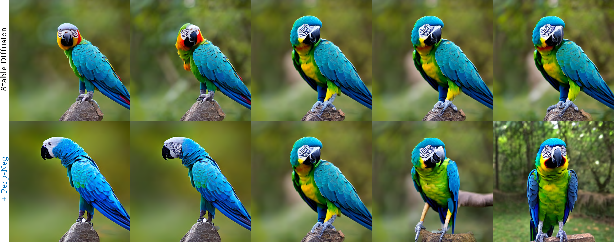

A parrot, side view → a parrot, front view

A panda, side view → a panda, front view

A lion, side view → a lion, front view

A snow leopard, side view → a snow leopard, front view
Although text-to-image diffusion models have made significant strides in generating images from text, they are sometimes more inclined to generate images like the data on which the model was trained rather than the provided text. This limitation has hindered their usage in both 2D and 3D applications. To address this problem, we explored the use of negative prompts but found that the current implementation fails to produce desired results, particularly when there is an overlap between the main and negative prompts. To overcome this issue, we propose Perp-Neg, a new algorithm that leverages the geometrical properties of the score space to address the shortcomings of the current negative prompts algorithm. Perp-Neg does not require any training or fine-tuning of the model. Moreover, we experimentally demonstrate that Perp-Neg provides greater flexibility in generating images by enabling users to edit out unwanted concepts from the initially generated images in 2D cases. Furthermore, to extend the application of Perp-Neg to 3D, we conducted a thorough exploration of how Perp-Neg can be used in 2D to condition the diffusion model to generate desired views, rather than being biased toward the canonical views. Finally, we applied our 2D intuition to integrate Perp-Neg with the state-of-the-art text-to-3D (DreamFusion) method, effectively addressing its Janus (multi-head) problem.
A parrot, side view → a parrot, front view
A panda, side view → a panda, front view
A lion, side view → a lion, front view
A snow leopard, side view → a snow leopard, front view
In each sampling iteration of the text-guided diffusion model, Perp-Neg find the perpendicular componenet of the negative prompt with respect to the main prompt. In this way, the negative prompt is not biased toward the main prompt to help generate the image preserving the requested attributes in the main prompt while eliminating the attribute described in the negative prompts.
Algorithm illustration
We observe to generate correct conditioned view, leveraging negative prompt to eliminate the ambiguous views is helpful. Thus we propose to use a combination of positive and negative prompts to condition the diffusion model to generate desired views, rather than being biased toward the canonical views. For example, when the back view is desired, we can use the negative prompt to eliminate the front view and the side view.
@article{armandpour2023reimagine,
title={Re-imagine the Negative Prompt Algorithm: Transform 2D Diffusion into 3D, alleviate Janus problem and Beyond},
author={Mohammadreza Armandpour and Huangjie Zheng and Ali Sadeghian and Amir Sadeghian and Mingyuan Zhou},
journal={arXiv preprint arXiv:2304.04968},
year={2023}
}